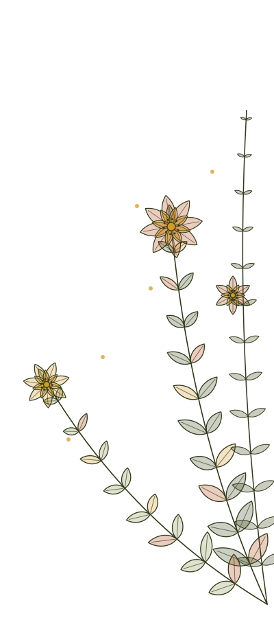
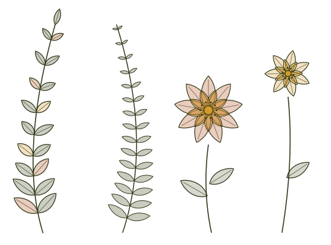
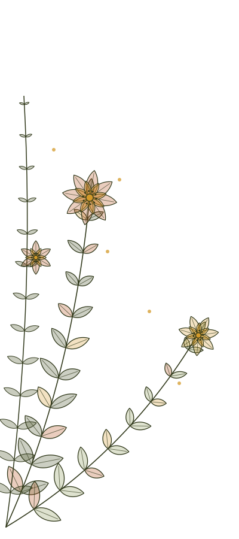

Self-Discovery
Understand your natural tendencies, characteristics and patterns through traditional knowledge and guided self-reflection.


We are all different. We think differently, respond differently and have different needs.
Stay Natural brings together traditional wisdom and practical wellbeing experiences to help you understand yourself and make better choices for everyday life.
Think about it.
Two people can eat the same food, follow the same routine and do the same exercise, but experience completely different results.
Why?
Because each of us has a different nature.
Our physical constitution, mental tendencies, habits, environment and lifestyle all influence how we experience life.
Traditional systems such as Yoga, Ayurveda and Vedic knowledge have explored these differences for thousands of years.
At Stay Natural, we bring these ideas into everyday life in a simple, practical and meaningful way.
The purpose is not to make life complicated. It is to help you understand yourself better, so you can make choices that work for you.
Stay Natural brings together different areas of wellbeing and self-discovery. Explore them at your own pace.
Understand your natural tendencies, characteristics and patterns through traditional knowledge and guided self-reflection.
Explore practical ways to improve your daily routine through movement, breathing, relaxation and mindful living.
Develop greater awareness of your thoughts, habits and choices. Build a more balanced and purposeful way of living.
When you need something more specific, explore individual counselling and personalised wellbeing services available separately.
Understanding something is one thing. Bringing it into your daily life is another.
That is why Stay Natural offers a membership where you can learn, practise, participate and connect throughout the month.
As a member, you become part of an ongoing experience built around practical wellbeing, self-discovery and personal growth.
Your Basic Membership brings together live experiences, learning resources and a community to support your journey.
Sunday Reset is our weekly live online group experience.
Each session follows a monthly theme and combines practical learning with guided activities. Depending on the session, these may include gentle movement, stretching, breathing practices, relaxation, Yoga Nidra, self-acupressure and reflection.
It is an opportunity to pause, learn something useful and take a positive step towards better everyday wellbeing.
Included in your membership.
Why are people different? Why do we have different tendencies, strengths and ways of responding to life?
Decode You introduces a traditional framework of nine planets and five elements to explore these questions.
Through simple explanations, relatable examples and guided reflection, you begin to explore the different dimensions of your nature.
A monthly introductory group workshop is included in your membership.
Personal birth-chart interpretation and individual counselling are separate services.
Included in your membership.
Become part of a community of people who are interested in learning, sharing and making positive changes in their lives.
Stay connected with fellow members, discover new experiences and be part of the Stay Natural community.
Included in your membership.
Discover useful ideas and knowledge through Stay Natural's learning and publication resources.
Explore available:
New content and resources will be made available as they are published.
Included in your membership.
When you become a member, you get access to My Space, your private member area within Stay Natural.
It brings your membership experiences together in one place.
From My Space, you can access available sessions, workshops, learning resources and member experiences.
It is your space to stay connected with Stay Natural and continue your journey.
Stay Natural is for people who want to understand themselves better and bring more awareness into their everyday lives.
You may be looking to:
You do not need to know anything about Yoga, Ayurveda or astrology before joining.
Just bring your curiosity.
Stay Natural brings together knowledge and practices from different traditional systems, including Yoga, Ayurveda and Vedic wisdom.
But our approach is simple.
We believe knowledge becomes valuable when we understand it and know how to apply it in everyday life.
Whether it is understanding your nature, improving your routine or learning to manage your energy and attention, the focus is always on practical application.
Stay Natural is about making traditional knowledge accessible, relevant and meaningful for modern living.
Stay Natural was founded by Surya Singh, who has been teaching Yoga since 2011.
Over the years, his work has included teaching, workshops and retreats in India and internationally.
His interests extend beyond physical practice into Ayurveda, Vedic knowledge, meditation, breathing practices and the relationship between our nature and everyday choices.
Stay Natural brings these areas of knowledge together through a practical and accessible approach to wellbeing.
The larger vision is to create a space where people can learn, explore and discover better ways of living.
Make space for learning, wellbeing and self-discovery throughout the month.
Simple monthly membership. Your membership includes:
No. You do not need any previous experience. The sessions and workshops are designed to be accessible to beginners.
Sunday Reset is a one-hour live online group experience held every Sunday. It combines practical learning with guided wellbeing activities.
Decode You is an introductory group workshop exploring the traditional framework of nine planets and five elements to understand different aspects of human nature.
No. Basic Membership includes the introductory group Decode You workshop. Personal birth-chart interpretation and individual counselling are separate paid services.
You can access available membership experiences through your private My Space member area.
Basic Membership costs £19 per month.
Yes. It is a monthly subscription that renews automatically until cancelled, subject to the membership terms.

You do not need to change everything at once.
Sometimes, the first step is simply to understand yourself a little better.
Explore, learn, practise and make space for a healthier and more balanced way of living.
Welcome to Stay Natural.
Become a Member — £19/month